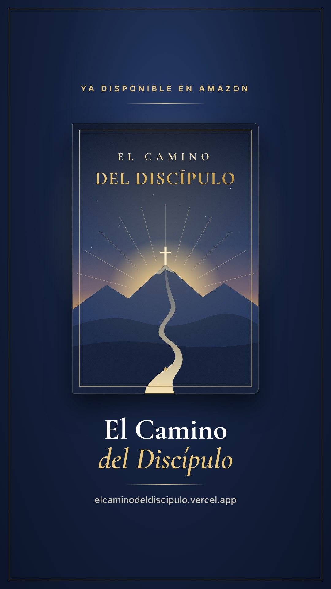
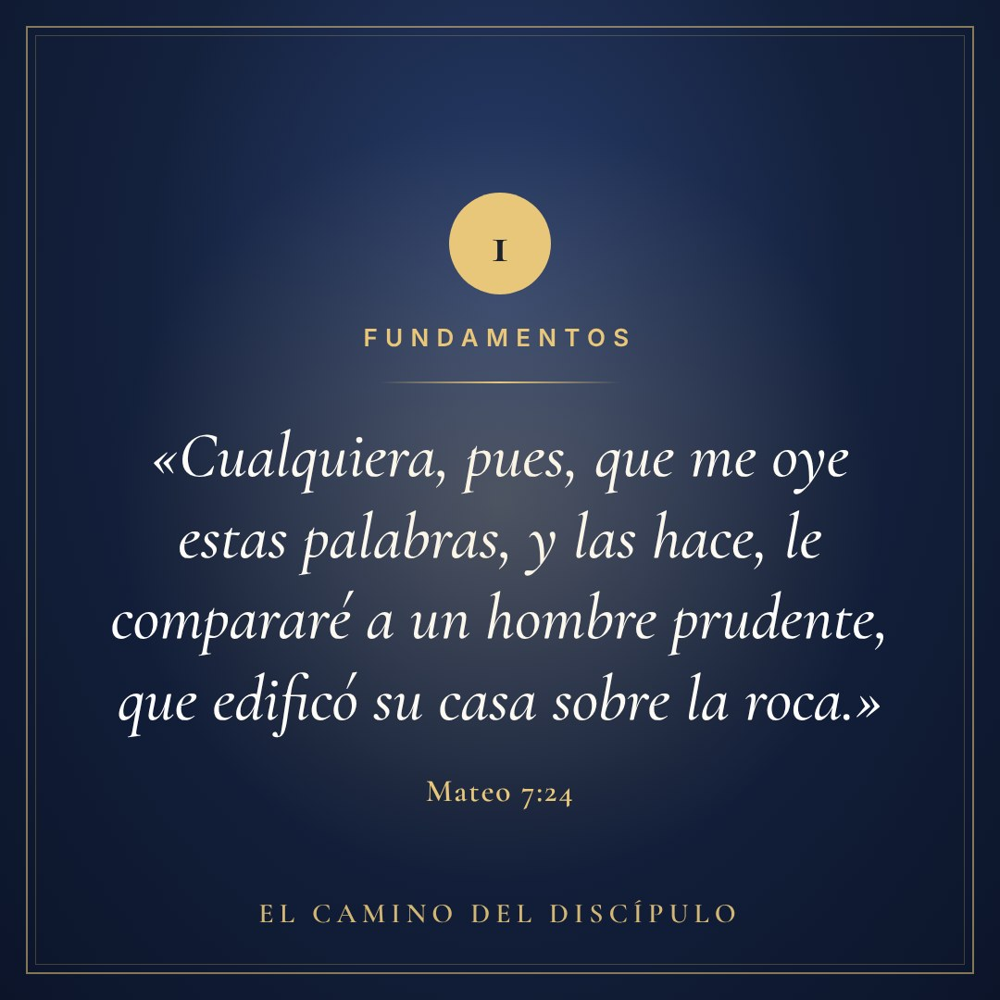
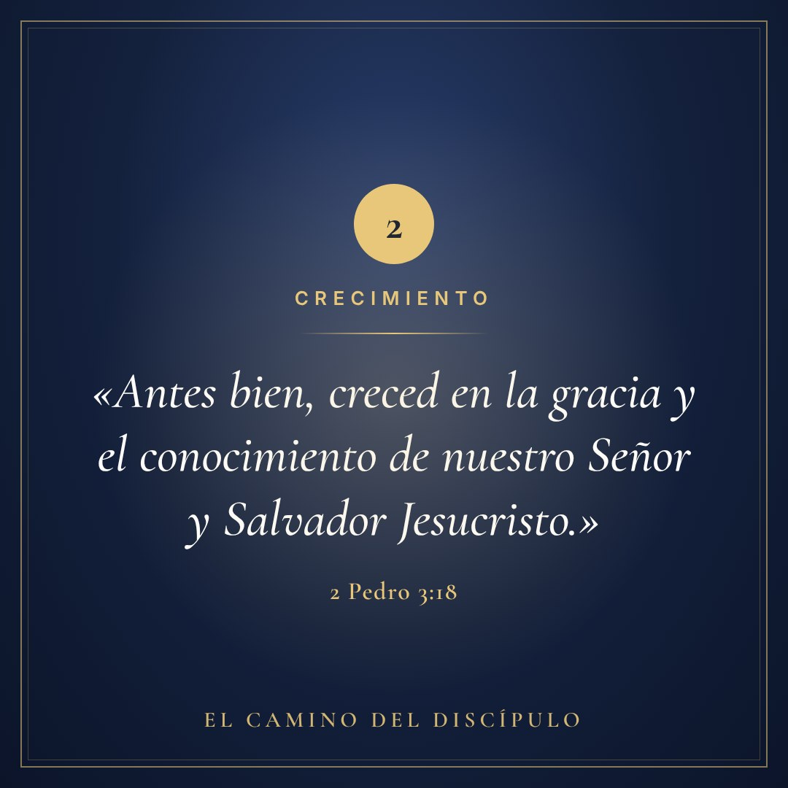
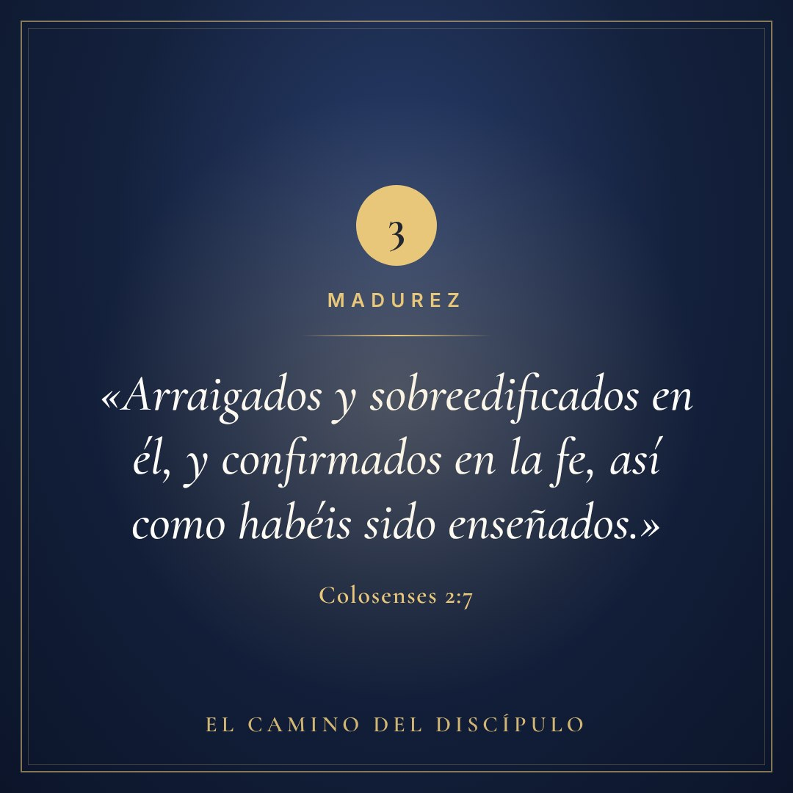
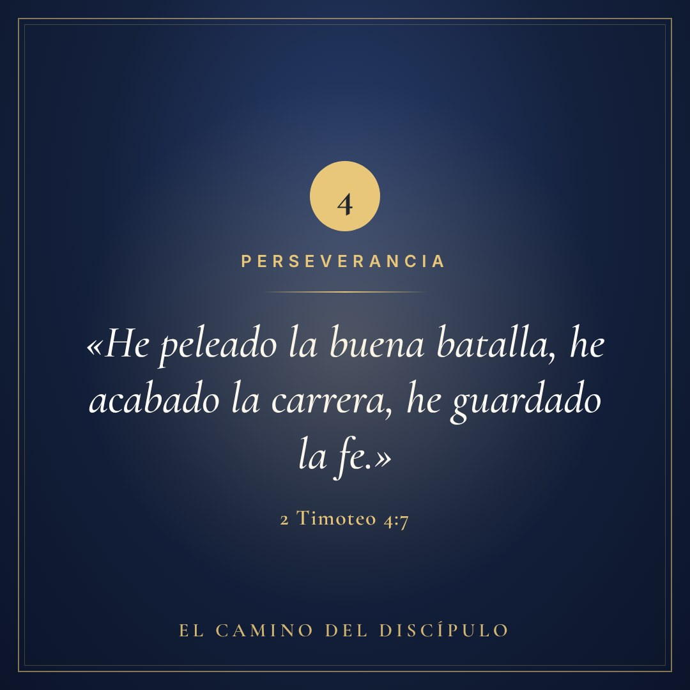

Ya disponible en Amazon
El Camino
del Discípulo
Un libro para quienes desean crecer en su relación con Dios y fortalecer su fe: desde los fundamentos de la vida cristiana hasta una fe madura, firme y perseverante.
Tráiler oficial
Un camino que no termina en el primer paso
Sobre el libro
Una guía para recorrer la vida cristiana, paso a paso
El Camino del Discípulo nace de mucho tiempo de oración y trabajo. Está pensado para quienes desean crecer en su relación con Dios y fortalecer su fe.
A lo largo de sus capítulos, recorre el camino del discípulo desde los fundamentos de la vida cristiana hasta una fe madura, firme y perseverante, siempre basada en la enseñanza de las Sagradas Escrituras.
- 01Para quien está dando sus primeros pasos en la fe.
- 02Para quien quiere afirmar sus raíces y madurar.
- 03Para quien desea permanecer firme hasta el final.
El corazón del libro
No basta con comenzar la vida cristiana; el verdadero desafío es permanecer fieles a Cristo hasta el final.
«Si vosotros permaneciereis en mi palabra, seréis verdaderamente mis discípulos.»
Juan 8:31El recorrido
Del primer paso a una fe que permanece
Cuatro etapas del discípulo, cada una a la luz de la Palabra.
-
1
Etapa uno
Fundamentos
Las bases de la vida cristiana: conocer a Cristo y edificar sobre la roca de su Palabra.
«Cualquiera, pues, que me oye estas palabras, y las hace, le compararé a un hombre prudente, que edificó su casa sobre la roca.» Mateo 7:24
-
2
Etapa dos
Crecimiento
Una relación con Dios que se profundiza día a día y da fruto en la vida diaria.
«Antes bien, creced en la gracia y el conocimiento de nuestro Señor y Salvador Jesucristo.» 2 Pedro 3:18
-
3
Etapa tres
Madurez
Una fe firme, arraigada en Cristo, que no se mueve con cada viento.
«Arraigados y sobreedificados en él, y confirmados en la fe, así como habéis sido enseñados.» Colosenses 2:7
-
4
Etapa cuatro
Perseverancia
Permanecer fieles a Cristo hasta el final: el verdadero desafío del discípulo.
«He peleado la buena batalla, he acabado la carrera, he guardado la fe.» 2 Timoteo 4:7
Un favor muy especial
Tu reseña puede llevar este libro a nuevas manos
Si ya lo estás leyendo o lo terminaste, dedicar un par de minutos a dejar una reseña en Amazon ayuda a que otras personas, que nunca han oído hablar del libro, se animen a leerlo. Para un autor que empieza, esas reseñas marcan una diferencia enorme.
- Abre el libro en AmazonUsa el botón de abajo e inicia sesión en tu cuenta.
- Baja hasta «Opiniones de clientes»Toca «Escribir una opinión» («Write a customer review»).
- Califica y cuenta tu experienciaUnas pocas líneas sinceras bastan: qué te dejó y a quién se lo recomendarías.
- ★ Dejar mi reseña en Amazon
Kit para compartir
Ayúdanos a que llegue a más personas
Descarga las imágenes, el video y el audio, y compártelos en tus estados, redes o grupos.


Historia / estado 1080×1920 · Descargar Publicación 1080×1080 · Descargar Invitación a reseñar 1080×1080 · Descargar



Versículo · Fundamentos Descargar

Versículo · Crecimiento Descargar

Versículo · Madurez Descargar

Versículo · Perseverancia Descargar
Que este libro llegue a tus manos
Y si te bendice, compártelo: tu recomendación puede ser la invitación que otra persona necesita.
Conseguir El Camino del Discípulo